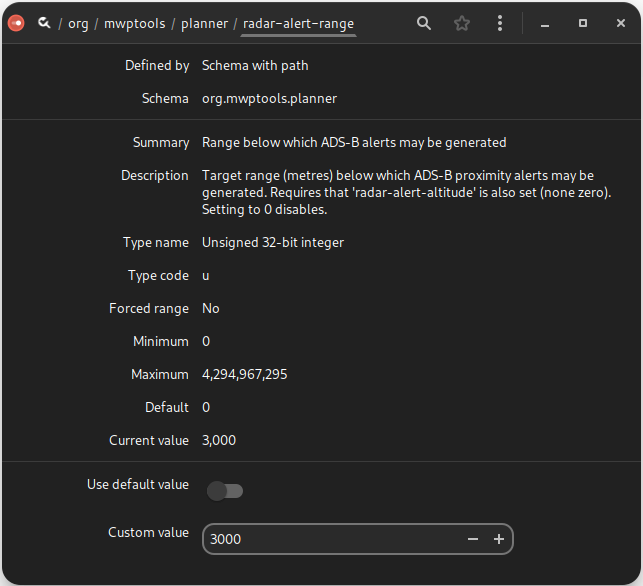

mwp Configuration#
Overview#
mwp stores configuration in a number of places, to some degree at the developer's whim, but also in accordance with the data item's volatility.
- Command line options
- Configuration Files
- dconf / gsettings
Each type is further discussed below.
Command line options#
Command line options provide a 'per instantiation' means to control mwp behaviour; the current set of command line options may be viewed by running mwp from the command line with the single option --help:
$ mwp --help
Where it is required to give permanence to command line options, they can be added to the configuration file $HOME/.config/mwp/cmdopts (on Windows $LOCALAPPDATA/mwp/cmdopts), which is described in more detail in the following section.
Note that the documentation will habitually refer to the configuration base directory as ~/.config as that is where it is found on the majority of OS; if you're using Windows, please adjust as necessary.
You can also use a system-wide "cmdopts" file, /etc/default/mwp. If this flie exists, it will read before the user's file.
- For singular options, any option in the user file will override the system file
- For multiply occurring options, e.g.
--radar-device, definitions will be additive. - Environment variables can be set from either or both files.
Debug flags#
The --debug-flags option takes a numeric value defines areas where additional debug information may be output.
| Value | Usage |
|---|---|
| 1 | Waypoints |
| 2 | Startup |
| 4 | MSP |
| 8 | ADHOC |
| 16 | RADAR |
| 32 | (unused) |
| 64 | SERIAL |
| 128 | VIDEO |
| 256 | GCS Location |
| 512 | Line of sight |
| 1024 | Radar |
| 2048 | Maps |
Values may be ORd together (so 4095 means all).
Configuration Files#
mwp configuration files are stored in a standard directory $HOME/.config/mwp. This directory is created on first invocation if it does not exist.
Platform differences#
- POSIX XDG compliance : User Configuration directory (
$XDG_CONFIG_HOME) - POSIX fallback :
$HOME/.config - Windows / Msys :
$LOCALAPPDATA/%LOCALAPPDATA%/$Env:LOCALAPPDATA
The following files may be found in the mwp directory:
cmdopts#
The file cmdopts contains command line options that the user wishes to apply permanently (and conveniently when run from a launcher icon rather than the command line).
The file contains CLI options exactly as would be issued from the terminal. Options may be on separate lines, and blank lines and line prefixed with a hash '#' are ignored. For example:
In addition to options (--), the file may also contain environment variables e.g. FOO=BAR.
# Default options for mwp
--rings 50,20
#--voice-command "spd-say -t female2 -e"
#--debug-flags=2
--dont-maximise
#-S 8192
# set the anonymous tile file.
MWP_BLACK_TILE=/home/jrh/.config/mwp/mars.png
So here the only current, valid options are --rings 50,20 --dont-maximise, and the environment variable MWP_BLACK_TILE is set (for anonymous maps).
The environment is set before any GTK / UI calls are made.
Map Sources#
mwp provides by default:
- OpenStreetMap Mapnik
- OpenStreetMap Cycle Map
- OpenStreetMap Transport Map
- Maps for Free Relief
- Bing Maps (no API key required, for as long as the service remains available).
- MapBox (requires API key)
- ESRI Clarity
Mapbox API Key management#
In preparation for the announced removal of the Bing Maps service, mwp adds a MapBox entry where the user has acquired a Mapbox API key.
This key may be either stored in the Desktop keyring (managed by libsecret) or as a plain text string in the gsettings database.
Keyring#
Add to the keyring using secret-tool with the following attributes:
secret-tool store --label="Mapbox API" name mapbox-api-key domain org.stronnag.mwp
Password: *************************************************
Gsettings#
Alternatively, the key can be added to the gsettings database:
gsettings set org.stronnag.mwp mapbox-apikey 'pk.xxxxxxx'
# where 'pk.xxxxxxx' is your MapBox API Key
Note that sadly libshumate creates a cache directory name from which the MapBox access token may be recovered, so there is little security / privacy gain by using the secret key-ring, alas. See Gitlab issue.
Additional Map Sources: sources.json#
sources.json facilitates adding non-standard map sources to mwp. See the anonymous maps section and comments in the source files in the qproxy directory.
Here is an example mwptools/src/samples/sources.json.
{
"sources" : [
{
"id": "OpenTopoMP",
"name": "OpenTopo",
"license": "(c) OSM",
"license_uri": "http://www.openstreetmap.org/copyright",
"min_zoom": 0,
"max_zoom": 19,
"tile_size": 256,
"projection": "MERCATOR",
"uri_format": "http://map-proxy/mapproxy/tiles/1.0.0/opentopo/EPSG3857/{z}/{x}/{y}.png"
},
{
"id": "LandscapeMP",
"name": "Landscape",
"license": "(c) OSM",
"license_uri": "http://www.openstreetmap.org/copyright",
"min_zoom": 0,
"max_zoom": 19,
"tile_size": 256,
"projection": "MERCATOR",
"uri_format": "http://map-proxy/mapproxy/tiles/1.0.0/landscape/EPSG3857/{z}/{x}/{y}.png"
},
{
"id": "CyclemapMP",
"name": "Cyclemap",
"license": "(c) OSM",
"license_uri": "http://www.openstreetmap.org/copyright",
"min_zoom": 0,
"max_zoom": 19,
"tile_size": 256,
"projection": "MERCATOR",
"uri_format": "http://map-proxy/mapproxy/tiles/1.0.0/cyclemap/EPSG3857/{z}/{x}/{y}.png"
},
{
"id": "Black",
"name": "Black Tiles",
"license": "(c) jh ",
"license_uri": "http://daria.co.uk/",
"min_zoom": 0,
"max_zoom": 20,
"tile_size": 256,
"projection": "MERCATOR",
"spawn" : "bproxy"
}
]
}
See also anonymous maps to customise the "black tile". The spawn stanza uses a proxy for non-TMS formats (see mwptools/src/qproxy for some examples).
volts.css#
vol.css contains alternate CSS themeing for the battery voltage dock item that may work better on dark desktop themes. An example file is provided as mwp/vcol.css which can be copied into .config/mwp/.
places#
The places (~/.config/mwp/places) file is a delimited (CSV) file that defines a list of "shortcut" home locations used by the "View / Centre on Position ..." menu item. It consists of a Name, Latitude, Longitude and optionally zoom level, separated by a TAB,|,: or ;. Note that positions may be localised in the file and thus . is no longer recognised as a field separator.
Example places
# mwp places name,lat,lon [,zoom]
Beaulieu|50.8047104|-1.4942621|17
Jurby:54.353974:-4.523600:-1
The user may maintain these files manually if used, or use the graphic places editor. The command line option --centre accepts a place name as well as a geographic coordinates.
Keyboard Accelerators#
The keyboard accelerators (to invoke functions) may be defined / overwritten by the file ~/.config/mwp/accels. This file consists of lines listing the action name and the accelerator key, for example:
# Action name (with or without "win." prefix), a space, key definition
radar-devices <control><shift>r
win.vlegend <control><shift>v
The first (non-comment) line adds a new accelerator, the second replaces the existing <control><shift>v for toggle the ADSB altitude / colour legend.
The list of recognised action names and accelerators (aka shortcuts) may be found in mwp-window.vala.
Panel settings#
See the migration guide for information concerning:
~/.config/mwp/panel.conf~/.config/mwp/.paned
Dconf / gsettings#
The underlying infrastructure used by mwp has a facility for storing configuration items in a registry like store. This is used extensively by mwp. The items can viewed and modified using a number of tools:
- mwp preference dialogue (for a small subset of the items)
- The
dconf-editorgraphical settings editor (Linux, FreeBSD) - The command line
gsettingstool (Linux, FreeBSD, Windows) - Regedit (Windows)
- Text Editor (MacOS)
MacOS (exception)#
Gtk on MacOS does not support gsettings in a useful way. As a work around, MacOS settings are stored in a text .ini file, $HOME/.config/mwp/mwp.ini. This may be (carefully) edited with a text editor.
Linux, FreeBSD, Windows#
For gsettings and dconf-editor, the name-space is org.stronnag.mwp, so to view the list of items:
$ gsettings list-recursively org.stronnag.mwp
and to list then get / set a single item:
$ gsettings get org.stronnag.mwp log-save-path
..
$ gsettings set org.stronnag.mwp log-save-path ~/flight-logs/
dconf-editor#
This may not be installed by default, but should be available via the OS package manager / software centre.


Gsettings Description#
The full list of settings is maintained in a separate article, machine generated from the source code.
Replicating gsettings between machines or users#
The standard system dconf application can be used to back up and restore the above gsettings.
To backup the settings:
dconf dump /org/stronnag/mwp >/tmp/mwp-dconf.txt
To restore the settings (overwrite). This could be for a different user or on a new machine.
dconf load /org/stronnag/mwp </tmp/mwp-dconf.txt
Settings precedence and user updates#
mwp installs a number of icon files in $prefix/share/mwp/pixmaps. The user can override these by creating an eponymous file in the user configuration directory, ~/.config/mwp/pixmaps/. Such user configurations are never over-written on upgrade.
For example, to replace a mwp specific icon; i.e. replace the GCS Location icon ($prefix/share/mwp/pixmaps/gcs.svg) with a user defined file ~/.config/mwp/pixmaps/gcs.svg.
All loadable icon / symbol files must be SVG.
All icons are drawn as their "natural" size (from the svg element), and then may be scaled by the symbol-scale and touch-scale settings.
SVG customisation#
SVG files for ADSB reported aircraft will be recoloured according to altitude where the path has an id attribute of mwpbg (fill) or mwpfg (stroke). See src/samples/adsb-extra/gradient/README.md for details.
Where mwp is built against libshumate 1.5 (i.e. supporting symbol alignment), and where user defined override icons are used, it is possible to set the location of the "hot spot" in a SVG icon.
Hot spot location uses the GTK xalign and yalign parameters. There are floating point numbers in the range (0.0 - 1.0) defining a coordinate system where (0,0) is top left and (1,1) is bottom right. These values are set using special tags (mwp:xalign and mwp:yalign) in the icon's svg element:
Given the header:
<?xml version="1.0" encoding="UTF-8"?>
<svg xmlns="http://www.w3.org/2000/svg"
xmlns:xlink="http://www.w3.org/1999/xlink"
xmlns:mwp="http://www.daria.co.uk/namepaces/mwp"
mwp:yalign="0.83"
width="48" height="48" viewBox="0 0 48 48">
The GCS icon (co-incident with the home icon) has its hot spot at the bottom of the blue shape (same as the pointy bit of the brown home icon).
Note also that for mwp to load SVG icons, librsvg requires that the svg element contains width and height attributes.
Environment variables#
mwp recognises the following application specific environment variables
| Name | Usage |
|---|---|
CFG_UGLY_XML |
Generate ugly multi-mission XML, so as not to confuse the (older?) inav configurator |
MWP_ARGS |
Extra command line arguments |
MWP_BLACK_TILE |
Specify a black tile to be used by the Black Tiles map proxy |
MWP_LOG_DIR |
Location of console logs ($HOME if undefined) |
MWP_PRINT_RAW |
If defined, output hex bytes from serial I/O |
MWP_STATS_LOG |
Time (seconds, >0) to automatically log "serial" statistics |
MWP_TIME_FMT |
The time format for log output; by default "%FT%T%z", any GLib2 DateTime (strftime-like) format may be used; "%T.%f" works well on modern GLib. |
Mime types for common file formats#
mwp adds XDG mime types for certain file types handled by mwp.
| Data Source | Mime Type | File Manager | DnD |
|---|---|---|---|
| Multiwii Mission (XML) | application/vnd.mw.mission | Yes 1 | Yes 2 |
| Blackbox log | application/vnd.blackbox.log | Yes | Yes |
| Mwp telemetry log | application/vnd.mwp.log | Yes | Yes |
| Multiwii mission (mwp JSON) | application/vnd.mwp.json.mission | Yes | Yes |
| OTX telemetry log | application/vnd.otx.telemetry.log | No | Yes |
Notes:
1. The file manager (at least Nautilus / Gnome) will offer mwp as the default application to open the file.
2. DnD. The file can be dropped onto the mwp map and will be opened. The file may also be provided on the mwp command line without --option; e.g. mwp --mission demo.mission and mwp demo.mission will behave in the same way.